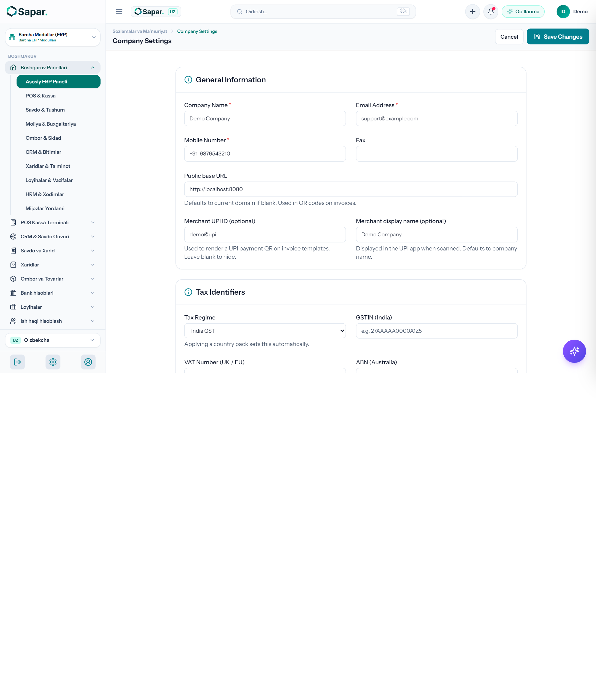
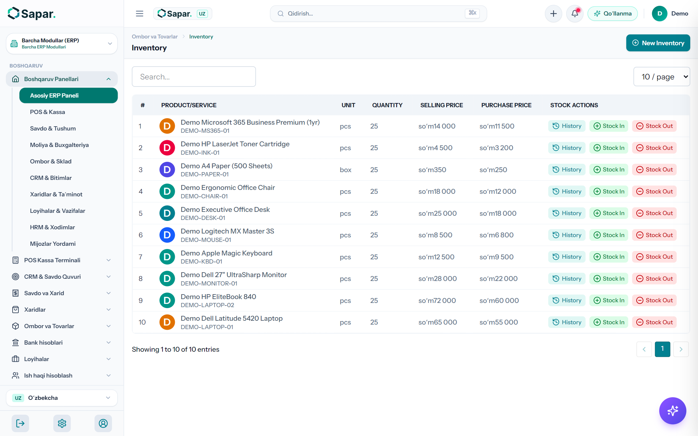
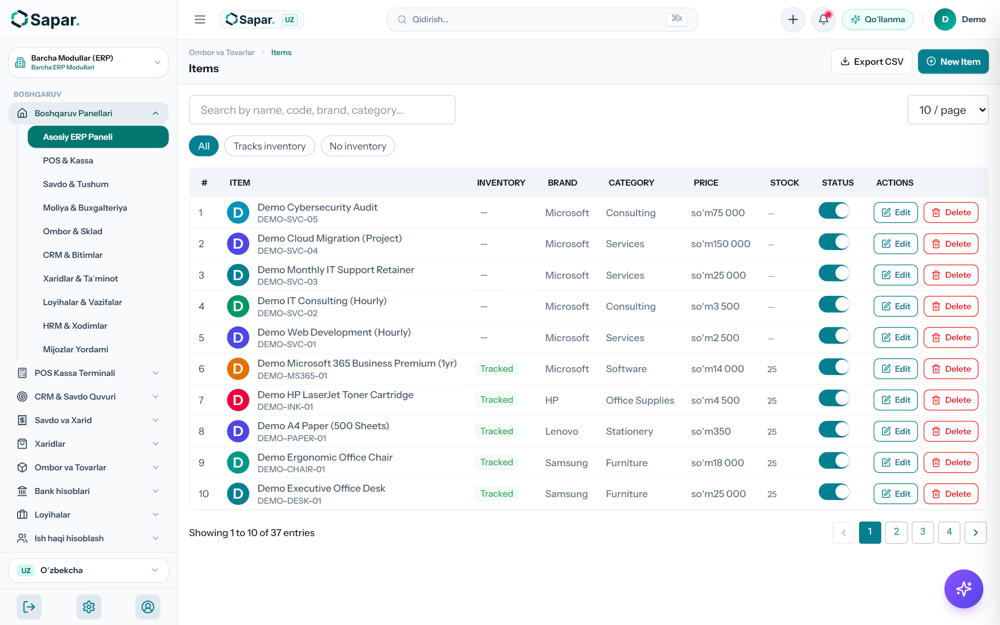
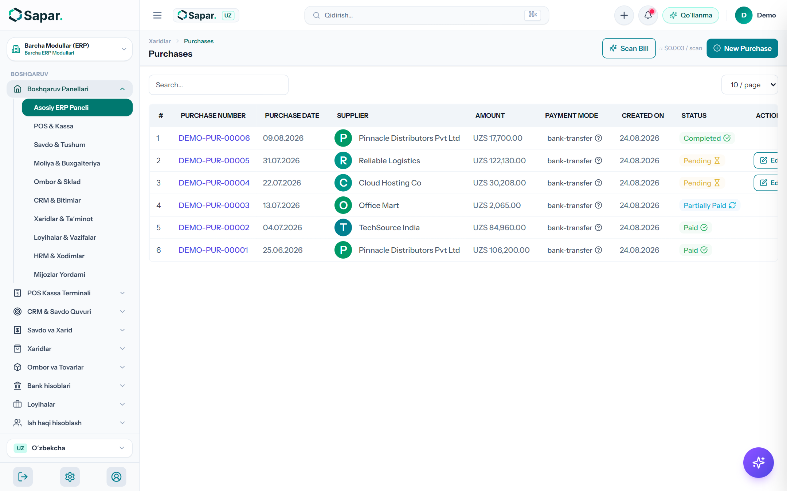
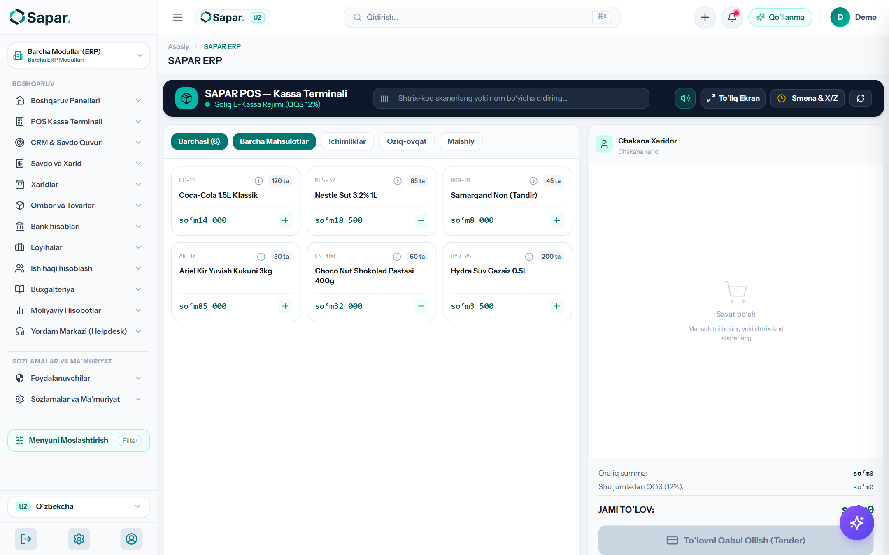
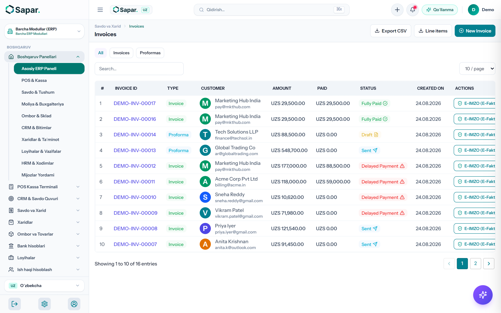
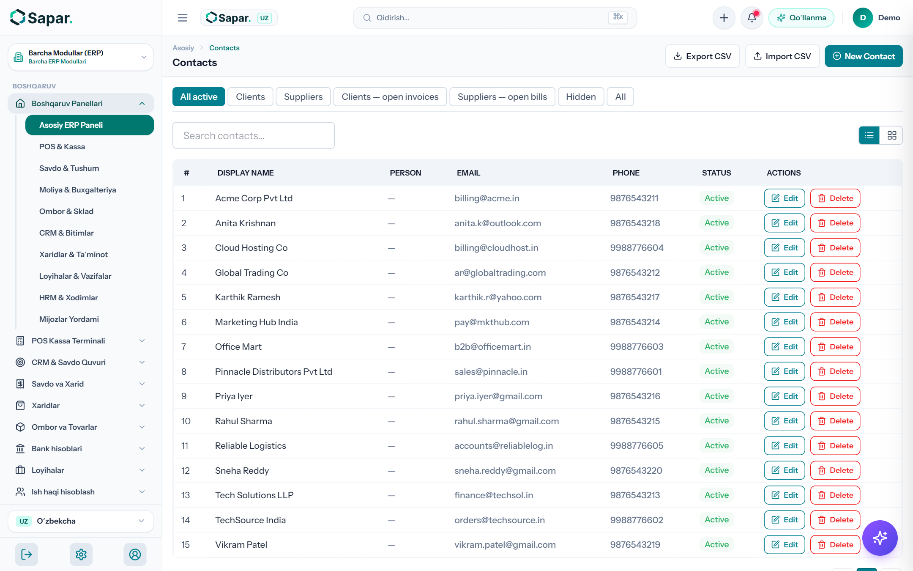
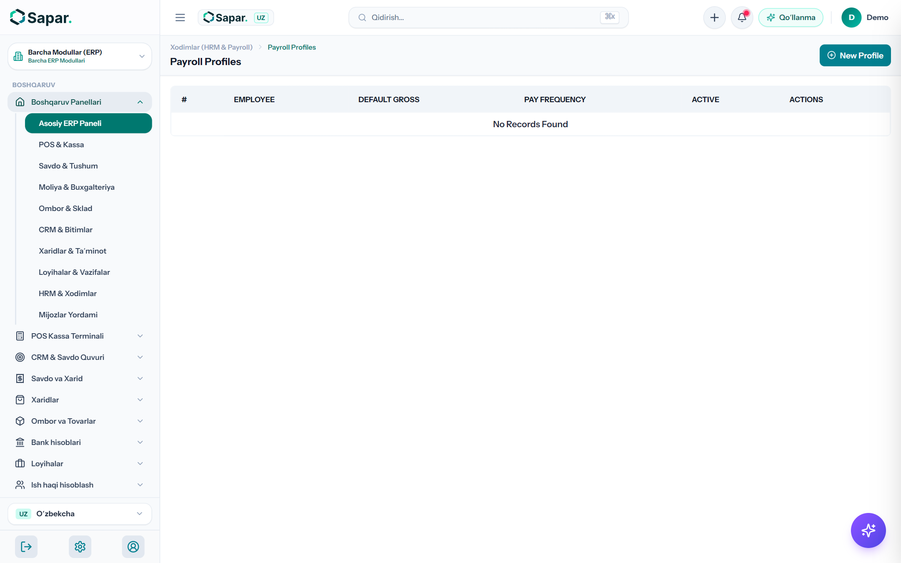
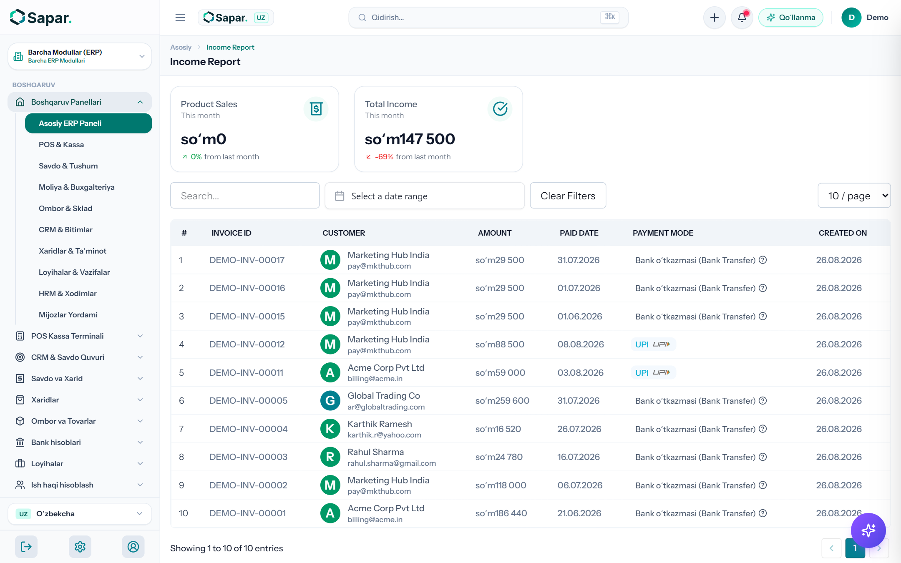
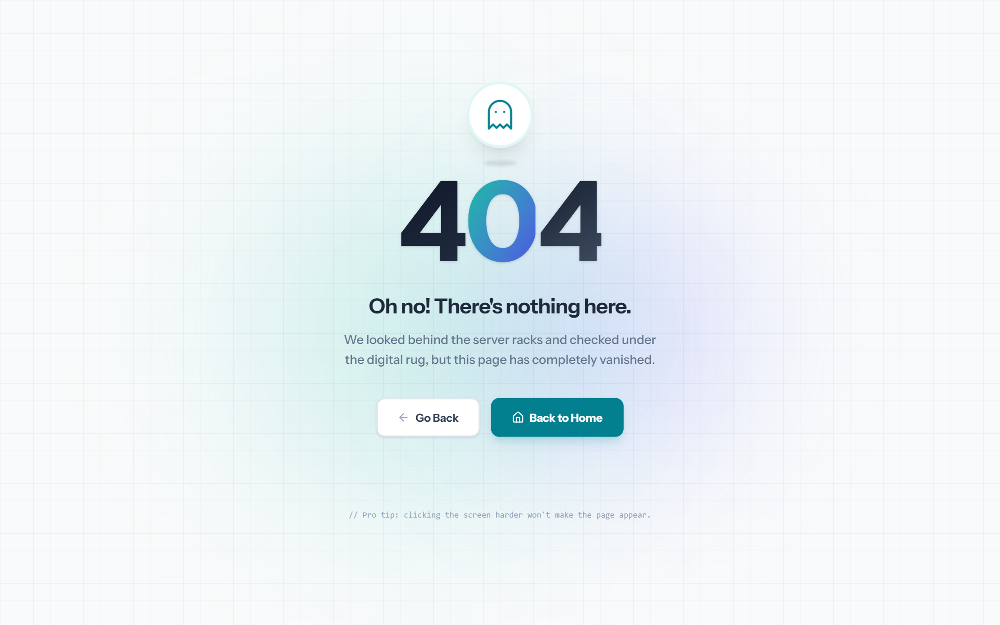

Sement, armatura, gʻisht, boʻyoq, gipsokarton va santexnika mahsulotlari savdosi bilan shugʻullanuvchi doʻkonlar hamda ulgurji savdo bazalari uchun barcha biznes jarayonlarini (Kassa, Ombor, Didox E-Faktura, Nasiya, Ish haqi va Soliq) 100% raqamlashtirish boʻyicha qadamma-qadam amaliy yoʻriqnoma.
Kompaniya STIR, bank hisob raqami, MFO, QQS guvohnomasi va doʻkon rekvizitlarini sozlash
Tizimda ishlashni boshlashdan oldin barcha rasmiy hujjatlar, hisob-fakturalar va kassa cheklarida toʻgʻri maʼlumotlar chiqishi uchun korxona profilini toʻldiring:
Kompaniya nomi (masalan: "Stroy Market Baraka" MCHJ), STIR (9 xonali ИНН), manzil va telefon raqamlarini kiriting.
Milliy valyutadagi 20 xonali asosiy hisob raqam (20208000...), bank MFOsi va bank nomini kiriting.
QQS toʻlovchisi boʻlsangiz — 12% QQS stavkasini standart qilib belgilang. Agar Aylanmadan olinadigan soliq toʻlovchisi boʻlsangiz — 4% stavkani tanlang.

Ochiq maydon, yopiq ombor va savdo zali qoldiqlarini alohida boshqarish
Qurilish mollari savdosida tovarlar har xil joylarda saqlanadi. Masalan: armatura va gʻisht ochiq maydonda, sement va quruq qorishmalar yopiq quruq omborda, boʻyoq va instrumentlar savdo zalida turadi.
| Ombor Nomi | Turi | Saqlanadigan Mahsulotlar | Masʼul Shaxs |
|---|---|---|---|
| Asosiy Savdo Zali | Retail / Doʻkon | Boʻyoqlar, kafel, santexnika, mix, bolt, elektr jihozlar | Bosh kassir / Sotuvchi |
| Yopiq Quruq Ombor | Yopiq Ombor | Sement, rotband, gipsokarton, izolyatsiya materiallari | Ombor mudiri 1 |
| Ochiq Maydon Ombori | Ochiq Baza | Armatura, shlakoblok, gʻisht, qum, shagʻal, yogʻoch | Ombor mudiri 2 |

Oʻlchov birliklari (qop, tonna, dona, metr), shtrix-kodlar va Soliq MXIK kodlarini biriktirish
Qurilish mollari har xil oʻlchov birliklarida sotiladi. SAPAR tizimida har bir mahsulot uchun toʻgʻri parametrlar oʻrnatiladi:
dona, qop (50 kg), tonna, metr, kv.metr (m²), litr, rulon birliklarini kiriting.
Didox va Soliq tizimida chek urilganda xatolik boʻlmasligi uchun Soliq qoʻmitasining rasmiy MXIK kodlari biriktiriladi (masalan, Sement M500 uchun MXIK kodi: 02601001001000000).
Sement 50 qopdan kam qolsa yoki Armatura 2 tonnadan kamaysa, tizim avtomatik ravishda "Qoldiq kamaydi" signali beradi.

Xarid buyurtmasi, yetkazib beruvchilar hisob-fakturasi va avtomatlashtirilgan FIFO tannarx hisobi
Qurilish bozorida mahsulot narxi tez-tez oʻzgaradi (masalan, armatura narxi metall birjasiga qarab har hafta oʻzgarishi mumkin). SAPAR tizimi FIFO (First-In, First-Out) usulida har bir partiya tannarxini alohida hisoblab boradi:
Bekobod metallurgiya zavodiga yoki Sement zavodiga rasmiy xarid buyurtmasini shakllantiring va PDF/E-IMZO orqali yuboring.
Yuk kelganda omborga kirim qilinadi. Tizim avtomatik ravishda oʻrtacha tannarxni va jami xarid summasini qayd etadi.
Taʼminotchi oldidagi qarzlar, qilingan bank toʻlovlari va oʻzaro hisob-kitob solishtirma dalolatnomasi (Akt sverki) 1 tugma bilan avtomatik shakllanadi.

Tezkor shtrix-kod skaneri, aralash toʻlov (Naqd + Humo/Uzcard + Nasiya) va kassa smenasi
Doʻkonga kelgan xaridorlar uchun tezkor xizmat koʻrsatish terminali:

Qurilish kompaniyalariga tijorat taklifi, yukxati (TTN), E-Faktura va E-IMZO raqamli imzo
Katta obyektlar, qurilish brigadalari va korxonalarga ulgurji sotish jarayoni:
Qurilish firmasining soʻrovi boʻyicha rasmiy narx taklifi tuziladi va mijozga havola yoki PDF orqali yuboriladi.
Haydovchi yoki yuk mashinasiga rasmiy yukxati chiqarib beriladi (mashina raqami, haydovchi ismi va yuk roʻyxati bilan).
Hisob-faktura toʻgʻridan-toʻgʻri E-IMZO USB fleshka orqali imzolanadi va Didox/Soliq orqali xaridorning kabinetiga yuboriladi.

Mijozlar balansi, qarz limiti, toʻlov eslatmalari va avtomatik Akt sverki
Qurilish doʻkonlarida savdoning 40-60% qismi doimiy ustalar va pudratchilarga nasiyaga beriladi. Nasiyani nazoratsiz qoldirish biznesni bankrotlikka olib keladi:

Kassirlar, omborchilar va yuk tashuvchilar oyligi, 12% JShODS, 12% Ijtimoiy soliq va 0.1% INPS
Doʻkon xodimlarining oylik maoshlari Oʻzbekiston Respublikasi Mehnat Kodeksi va Soliq stavkalariga asosan avtomatik hisoblanadi:
| Xodim Lavozimi | Belgilangan Oklad (Brutto) | JShODS (12%) | INPS (0.1%) | Xodimga Toʻlanadigan (Netto) | Korxona Ijtimoiy Soligʻi (12%) |
|---|---|---|---|---|---|
| Bosh Sotuvchi / Kassir | 5 000 000 soʻm | 600 000 soʻm | 5 000 soʻm | 4 400 000 soʻm | 600 000 soʻm |
| Ombor Mudiri | 4 500 000 soʻm | 540 000 soʻm | 4 500 soʻm | 3 960 000 soʻm | 540 000 soʻm |
| Yuk Tashuvchi (Yukchi) | 3 500 000 soʻm | 420 000 soʻm | 3 500 soʻm | 3 080 000 soʻm | 420 000 soʻm |

Bank koʻchirmalari, operatsion xarajatlar va sof foyda hisoboti (2-shakl)
Doʻkon egasi har kuni va har oy oxirida quyidagi asosiy moliyaviy koʻrsatkichlarni koʻrib turadi:
Tushum − Tovarlar Tannarxi − Operatsion Xarajatlar − Soliqlar = Sof Foyda.
10006_29 QQS deklaratsiyasi va 11101_14 JShODS oylik hisobotlarini avtomatik tayyorlash
Har oyning 15-sanasigacha Soliq qoʻmitasiga topshirilishi kerak boʻlgan barcha hisobotlar SAPAR tizimidagi birlamchi maʼlumotlar asosida 1 bosishda toʻliq yigʻib beriladi:
Sotilgan tovarlar boʻyicha hisoblangan QQS va taʼminotchilardan olingan tovarlar boʻyicha hisobga olinadigan (zachet) QQS summasi avtomatik ayirilib, toʻlanadigan sof QQS summasi chiqariladi.
Barcha xodimlarning JShShIR (PINFL) raqamlari boʻyicha oylik hisoblangan ish haqi va ushlab qolingan soliqlar reyestri shakllanadi.

Ertalabki kassa ochishdan kechki Z-hisobot va ombor nazoratigacha
| Vaqt | Masʼul Xodim | Bajariladigan Vazifa | SAPAR Tizimidagi Boʻlim |
|---|---|---|---|
| 08:00 – 08:30 | Kassir | POS Kassani ochish, boshlangʻich mayda pulni kiritish | /pos → Kassa ochish |
| 08:30 – 09:30 | Ombor mudiri | Zavoddan kelgan yangi yuklarni qabul qilish va kirim qilish | /admin/purchases → Yangi kirim |
| 09:30 – 18:00 | Kassir / Sotuvchi | Chakana xaridorlarga xizmat koʻrsatish, chek urish, nasiyani qayd etish | /pos |
| 10:00 – 17:00 | Menejer | Qurilish firmalariga E-Faktura (Didox) chiqarish, yukxati berish | /admin/invoices |
| 18:00 – 18:30 | Kassir | Kunlik kassani yopish, naqd pul va kartani sanash, Z-hisobot chiqarish | /pos → Smenani yopish |
| 18:30 – 19:00 | Rahbar / Buxgalter | Kunlik tushum, sof foyda va qarzdorliklar oʻzgarishini koʻrish | /admin/dashboard |